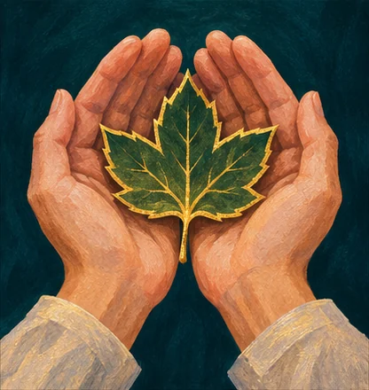
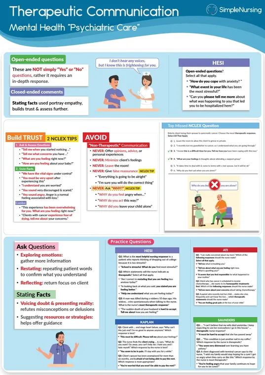
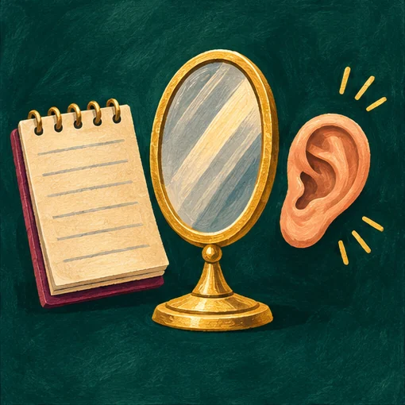
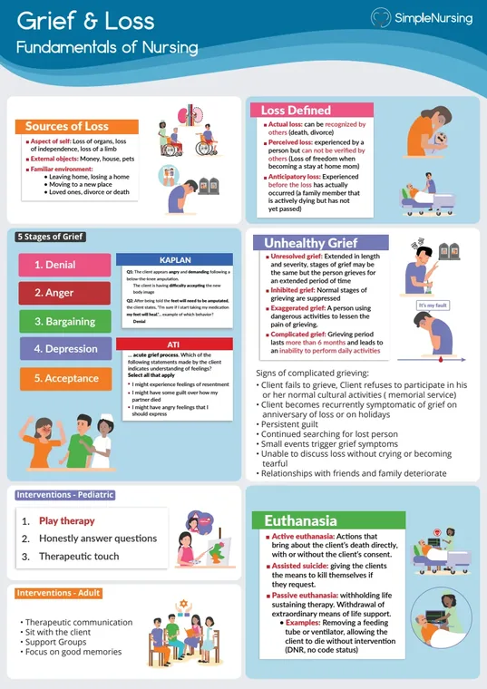
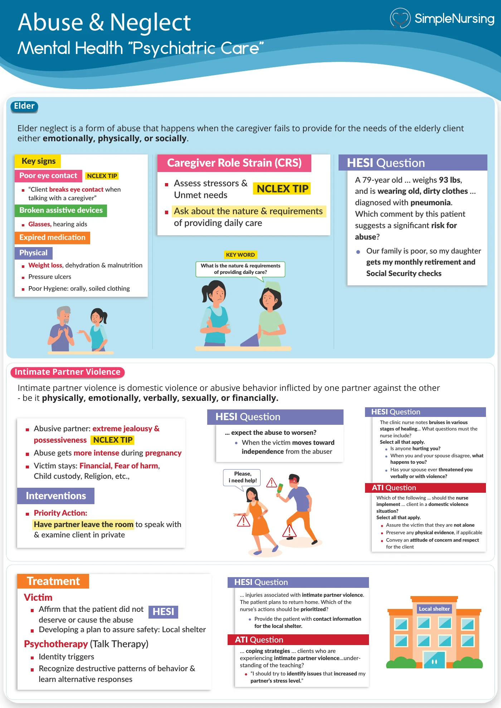
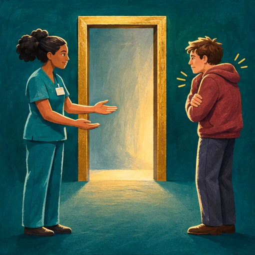

A patient says “I feel empty” while smiling. How would you chart the two findings?
- Think…
- Quote the reported mood and describe the observed facial expression separately.
NUR 175 · Exam 2 · Simple exam guide
Modules 4–7

Decide whether the patient can process a long explanation right now. Identify the first change that would make the setting unsafe.






C. Have one calm nurse stay nearby and use brief directions.
Severe anxiety limits attention. A calm presence and simple instructions support orientation while medical causes are assessed.
A. What the patient has authorized the team to share.
Consent and applicable confidentiality rules guide disclosure.